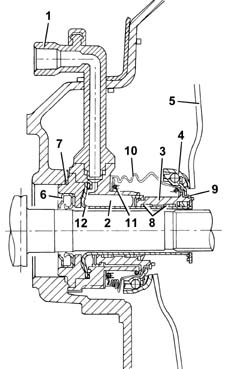

1820B HYDRAULIC CLUTCH SYSTEM
- Path
- Descriptions > 18 CLUTCH > 1820 CLUTCH RELEASE CONTROLS > 1820B HYDRAULIC CLUTCH SYSTEM
- Kind
- system description
- Applies to
- engines: 1.6 TS , 1.8 TS, 2.0 JTS, 2.5 V6, 3.2 V6, 1.9 JTD 8v , 2.0 JTS, 2.4 JTD 10v; all production periods
- Interactive page
- https://sloeber94.github.io/elrnDB-a156/en/#/3232892
Applies to: engines: 1.6 TS , 1.8 TS, 2.0 JTS, 2.0 JTS; all production periods
COMPONENTS
Co-axial clutch control cylinder
This hydraulic actuator is fitted to the mainshaft and secured to the clutch bell housing
Oil under presure enters hydraulic chamber (2) through pipe (1) and presses piston (3), which slides iinside guide (12) by means of wear-resistance pads (8).
The piston integral with thrust bearing (4) pushes pressure plate springs (5) via the bearing outer race.
As oil pressure ceases, the actuator returns to rest position under the action of the springs of pressure plate (5)
The hydraulic actuator is sealed internally by seal (9).
The gearbox end seal is assured by oil seal (6) and o-ring (7).
Rubber gaiter (10) with retaining clip (11) is fitted to protect against the entrance of outside agents.
In the store, the co-axial cylinder is fitted with a plastic tube to protect o-ring (8).
A hydraulic control system with coaxial cylinder makes it possible to:
- reduce the transmission of vibrations to the passenger compartment due to the damping effect of the oil
- improve the gradualness of the engagement due to a constant adjustment of the clutch pedal setting
- decrease the operating load on the clutch pedal.
- eliminate the thrust bearing and control linkage.

1, Fluid inlet pipe 2, Hydraulic chamber 3, Piston 4, Thrust bearing 5, Pressure plate springs 6, Oil sealing ring 7, O-ring 8, Antiwear pads 9, Oil seal 10, Rubber bellows 11, Spring 12, Guide tube
Applies to: engines: 2.5 V6, 3.2 V6, 1.9 JTD 8v , 2.4 JTD 10v; all production periods
Refer 18